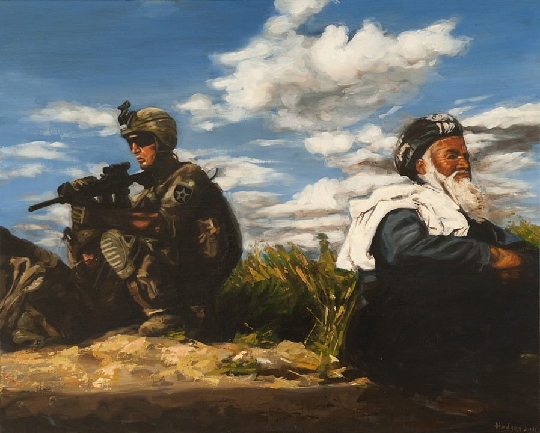

Hopie
As the perfect poster child for Campaigner this female rapper/attourney is a woman staking her claim in two very male dominated industries - law and hip hop.
Native Trends

Set in the urban landscape of New York City this campaign spreads awareness about where we get our latest fashion inspiration and thier origins. For this issue, we pay homage to Native Americans and their beautiful tribal prints.
While We Sleep
A photorealistic tribute to an army of soldiers serving in the Middle East at the height of Operation Iraqi Freedom by painter and tattoo artist, Aaron Hodges.
Alive and Well
Alive and Well produces a study of society through the messages of conscious, political artists and educators that will move our communities to action.